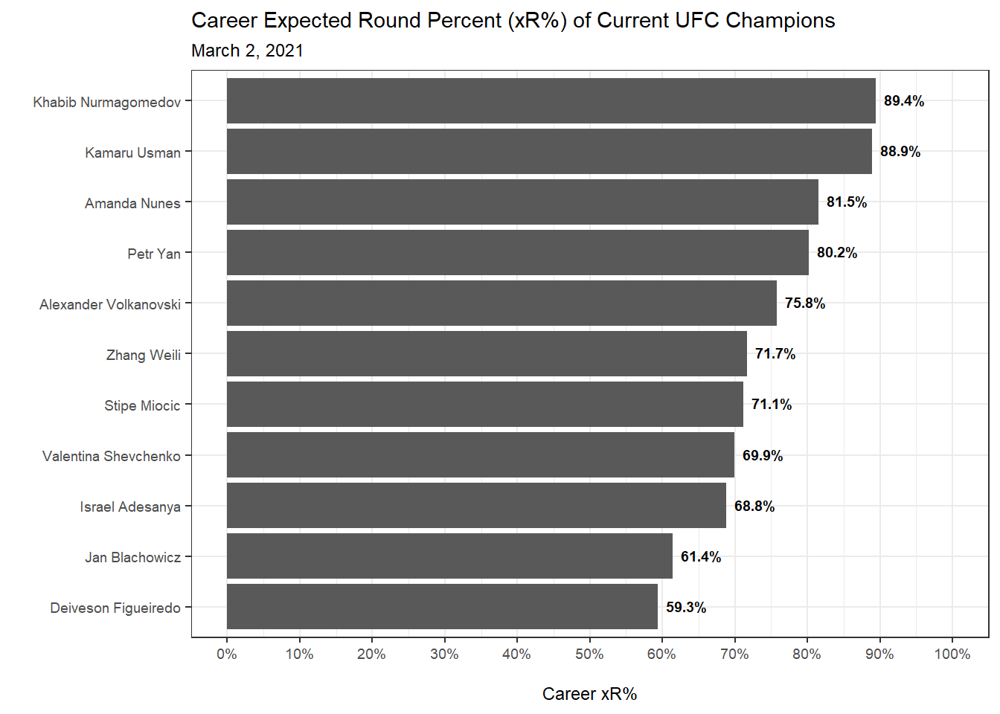
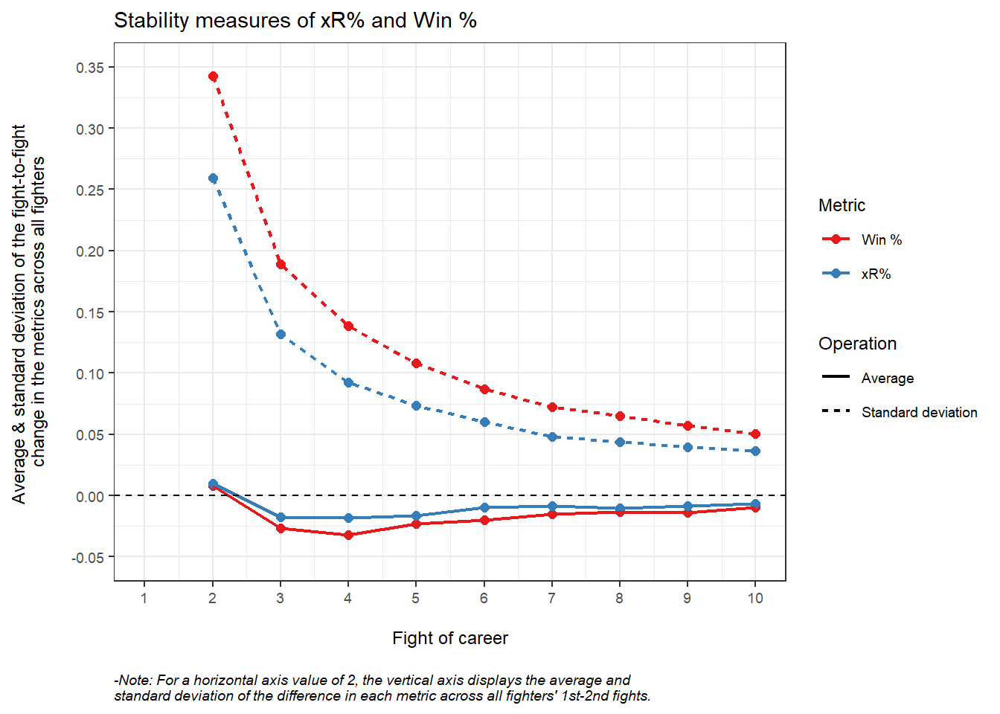
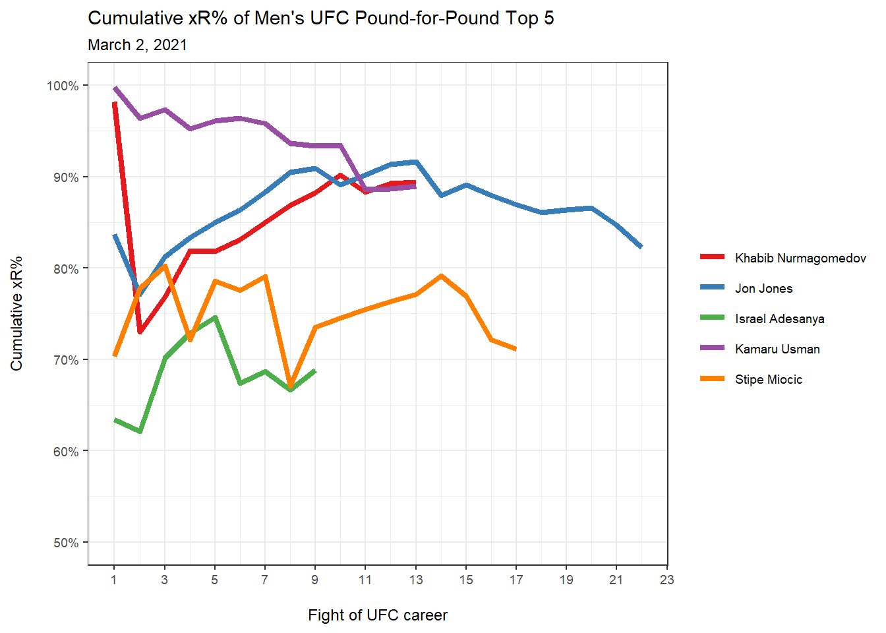

| Fighter | Round 1 xR | Round 2 xR | Fight xR | Fight xR% |
|---|---|---|---|---|
| A | 0.4 | 1.0 | 0.4 + 1.0 = 1.4 | 1.4 / 2 = 0.7 = 70% |
| B | 0.6 | 0.0 | 0.6 + 0.0 = 0.6 | 0.6 / 2 = 0.3 = 30% |
| Note: | ||||
| -In this example, Fighter A wins in the second round via submission. |
Introduction
Current quantitative fighter evaluation limitations
Quantitative mixed martial arts (MMA) analysis features two recurring challenges: dealing with small samples sizes and capturing the nuance that is inherent to the sport. Mainstream fighter evaluation metrics do not properly address these challenges.
In general, fighters do not have many professional MMA fights, and among their limited number of fights, the Ultimate Fighting Championship (UFC) is really the only MMA promotion that publicly tracks striking and grappling statistics from within each fight (though there are some exceptions). Hence, the amount of data that can be collected on each professional UFC fighter is limited, which makes quantitative analysis difficult.
Further, MMA is a sport that features many different fighting styles and techniques that are difficult to quantify. Fights can end at any moment via knockout or submission, so there are a number of paths to victory for fighters that possess expertise in multiple MMA disciplines. However, finishing ability is not the only signal of dominance in MMA. Proper fighter evaluation metrics should not only measure finishing ability but should also capture other forms of dominance inside the octagon.
Currently, fighters are frequently evaluated on their win percent (number of fights won divided by total number of fights) and finish percent (number of fights won via knockout or submission divided by number of fights won). However, both of these metrics are limited. In addition to small sample size issues, win percent fails to differentiate between close wins, dominant wins, and judging blunders. Finish percent measures a fighter’s ability to finish a fight, but as a broader measure of fighter dominance, it does not account for dominant wins by decision, which are arguably just as impressive as finishes.
Pushing the envelope with xR
Enter Expected Rounds (xR) and Expected Round Percent (xR%), new advanced metrics that aim to address the sample size and nuance issues that typically plague other fighter evaluation measures. There are many reasons why I believe the MMA community could benefit from these metrics.
First and foremost, as an advanced metric, xR is interpretable and easy to understand:
xR is the number of rounds a fighter would expect to have won, on average, given his or her round-by-round performances.
That’s it. Anyone who can understand that is capable of adopting this metric. The accompanying metric xR% is then just as straightforward:
xR% is the percent of rounds a fighter would expect to have won, on average, given his or her round-by-round performances.
The rest of this post will cover the methodological details of these metrics and then step through a number of reasons why MMA audiences of all types should care about xR and xR%. However, I want it to be stated clearly up front that these are advanced metrics that are approachable for everyone. If the methodological details of these metrics do not interest you, feel free to skip over that section.
You do not need to understand precisely how these metrics are computed in order to understand what they seek to measure and how they improve on current mainstream fighter evaluation metrics like win percent and finish percent.
Why you should care about xR
Before jumping into the methodology, below I’ve listed five reasons why I believe xR and xR% should be embraced by the MMA community.
- xR and xR% are interpretable
- xR% is more informative than win percent and finish percent
- xR% is more predictive than win percent and finish percent
- xR% is more robust to judging blunders than win percent
- xR% is more stable than win percent
The first reason, interpretability, has already been covered. It is my goal in this post to justify the remaining four reasons while ensuring that all readers are able to understand and interpret the figure below, which shows the career xR% of all current UFC champions.

Methodology
The xR metric is an extension of a machine learning algorithm I developed in a previous blog post. That algorithm uses official UFC round-level striking and grappling statistics to predict judges’ scores by round. The algorithm used to create xR is trained on 1,670 UFC fights that all ended in a decision by the judges across 2011-2020.
Note that to avoid overfitting, for each fight within a given year in 2011-2020, xR is computed using an algorithm trained on fights in all other years within 2011-2020. As an example, for each fight in 2014, xR is created using an algorithm trained on fights in 2011-2013 and 2015-2020. Then, for all fights outside of 2011-2020, xR is generated using all 1,670 fights in the 2011-2020 sample. This paradigm balances the need to avoid overfitting caused by training and predicting on the same fights with the consistency that comes from computing a metric using (nearly) the same algorithm over all of UFC history and into the future.
As demonstrated in my prior post, the algorithm is able to predict round scores with a high degree of accuracy and generate well-calibrated probabilities for each possible round score. That is, for each round in the UFC, we use the algorithm to recover the probability that the judges will score the round 10-9, 10-8, 9-10, or 8-10. Then, using these round score probabilities, we compute the probability of each fighter winning that round.
For each round that does not end via knockout or submission, xR is simply the probability that a particular fighter won the round. Hence, xR treats each round as a single point that is up for grabs and uses round win probabilities to partition that point between the two fighters. Then, for each round that ends in a knockout or submission, the winning fighter’s xR for that round is 1 and the losing fighter’s xR for that round is 0. The equation below defines xR for a given fighter as a piece-wise function.
xR for a given fighter and round: \[\begin{equation} xR = \begin{cases} 0 & \text{if fighter loses by knockout/submission} \\ \text{round win probability} & \text{if round goes the distance} \\ 1 & \text{if fighter wins by knockout/submission} \end{cases} \end{equation}\]
Notice that xR is computed by round, so for instance, a fighter who wins a fight via a second round submission will likely not capture all available xR for that fight. Instead, the first round’s xR will be partitioned according to each fighter’s round win probability, and then all of the second round’s xR will be given to the fighter who won by submission.
More concretely, consider Table 1 below of a hypothetical fight between Fighter A and Fighter B where Fighter A lands fewer strikes in the first round than his opponent but then wins by submission in the second. Here we see that xR is computed for each round independently of all other rounds. Then, aggregating xR up to the fight level yields the number of rounds each fighter could expect to have won, on average, given their performances in each round.
Even though Fighter B landed more strikes in the first round, there is uncertainty in how the judges would have scored this round, so Fighter A still gets some credit for that round. However, since Fighter A earned a submission in the second round, the entire round’s worth of xR goes to him. Thus, on average, Fighter A could expect to win 1.4 rounds if this exact fight was fought many times - sometimes he would lose the first round on the judges’ scorecard but other times he would win it. The xR metric attempts to capture the uncertainty in how rounds are scored by the judges, which separates it from traditional metrics like win percent and finish percent.
Finally, we see below that xR% is computed by adding each fighter’s xR across rounds and then dividing by the number of rounds fought. At the fight level, this tells us what percent of rounds each fighter could expect to have won given their round-level performances. Computing xR% over a fighter’s career would then describe how dominant that fighter has been by round, which again separates xR from win percent and finish percent.
In the hypothetical example below, if this was Fighter A’s first fight, his win and finish percents would be 100%, but his xR would only be 70%, which would better reflect his body of work since it accounts for the first round where he likely lost.
Again, if you are interested in understanding the technical details of how each fighter’s round win probability is computed, feel free to check out my previous blog post that provides a detailed overview of the algorithm and its performance.
Using this methodology, we are able to compute each fighter’s xR and xR% for every single round in UFC history in which the round-level statistics are publicly available.
xR is informative
The xR and xR% metrics are more informative fighter evaluation tools than mainstream metrics (like number of wins, number of finishes, win percent, and finish percent) because they value the characteristics of a fight that fighters strive to achieve. That is, xR rewards fighters for both dominance and finishing ability, and it can distinguish between fighters who just barely outperform their opponents and fighters who completely dominate their opponents.
Earning a finish is not the only way to signal dominance in the octagon, so finish percent clearly does not tell the whole story. Further, win percent does not account for the difference between a close split decision win and a clear unanimous decision win, but everyone who watches these fights can often immediately tell the difference between the two.
Since xR uses well-calibrated round win probabilities, a fighter’s xR and xR% for a close split decision is much lower, on average, than that of a dominant win. Table 2 below shows the average xR% earned by the winning fighter based on the method of victory. Not only is there a large difference between split and unanimous decisions, which further suggests that xR is being awarded appropriately, but we see that submissions and knockouts tend to result in even higher xR%. Hence, xR rewards both dominance and finishing ability in the octagon, unlike traditional fighter evaluation metrics.
| Method of Victory | Average Winner's Earned xR% |
|---|---|
| Split Decision | 56.1% |
| Unanimous Decision | 74.5% |
| Submission | 88.8% |
| Knockout | 90.0% |
| Note: | |
| -This table includes all UFC fights between 2011-2020. |
As a more concrete example, Table 3 below shows the xR breakdown for the UFC 245 main event between Kamaru Usman and Colby Covington. The fight was close heading into the fifth round where Usman won by knockout. Conventional metrics like win percent and finish percent assigned this fight as a one for Usman and a zero for Covington. However, those metrics leave a lot to be desired in terms of descriptive value, which is exactly why we turn to xR.
According to the underlying xR algorithm, Covington had a 71.8% probability of winning the first round on the judges’ scorecard, so his xR for this round was 0.718. No matter what happened in subsequent rounds, Covington would retain this xR for that round.
| Round | Usman xR | Covington xR |
|---|---|---|
| 1 | 0.282 | 0.718 |
| 2 | 0.308 | 0.692 |
| 3 | 0.974 | 0.026 |
| 4 | 0.284 | 0.716 |
| 5 | 1.000 | 0.000 |
| Note: | ||
| -Usman won by TKO in round 5. |
The aggregate xR and xR% for the fight are displayed in Table 4 below. We see that the xR% metric had this as a competitive fight. While Usman walked away with the majority of the available xR after earning the knockout, Covington also left with some xR for his efforts.
| Fighter | xR | xR% |
|---|---|---|
| Kamaru Usman | 2.85 | 57.0% |
| Colby Covington | 2.15 | 43.0% |
| Note: | ||
| -This table presents xR and xR% at the fight level. |
Notice how tight this fight was and how xR% reflected that while win percent and finish percent did not. The amount of information lost using conventional metrics is significant. Now imagine how wide that information gap could grow when you consider an entire fighter’s career. Relative to win percent and finish percent, xR% paints a much clearer picture of a fighter’s body of work across his or her career.
xR is predictive
To justify my claim that xR% is more predictive than win percent and finish percent, I calculate each UFC fighter’s cumulative xR%, win percent, and finish percent prior to each fight in his or her UFC career. Note that I only use UFC statistics (not professional MMA statistics) to compute these metrics.
Then, for xR%, I predict that the fighter with the higher xR% will win. For win percent, I predict that the fighter with the higher UFC win percent will win (and so on). Hence, each prediction is made using only information from each fighter’s prior UFC fights.
Note that predictions cannot be made for every UFC fight. If either fighter is making a UFC debut, then we do not have these metrics available for the debut fighter, so no prediction is made. Likewise, if the two fighters in a given fight have the same win percent, for instance, then no prediction is made based on win percent, but xR% and finish percent predictions will still be made (assuming there are no ties among these metrics).
We attempt to make predictions for all 4,399 UFC fights in 2011-2020. Table 5 below shows the results. We see that xR% makes more predictions than win percent and finish percent (as a result of fewer ties in xR%) and correctly predicts a higher share of fights in nearly every single year under consideration. It is significant that xR% is able to both make more predictions and predict better. It is generally easier to find more predictive success by making predictions on a narrower subset of the data, but the promise of xR% does not rely on making fewer predictions.
I am not claiming that xR% will get you rich in the betting markets. However, it is clear that xR% is a fighter evaluation metric that is more predictive of a given fight outcome than win percent and finish percent, and this has been true for essentially the entirety of the last decade.
| Year | UFC fights | xR% predictions | xR% accuracy | Win % predictions | Win % accuracy | Finish % predictions | Finish % accuracy |
|---|---|---|---|---|---|---|---|
| 2011 | 300 | 206 | 53.9% | 173 | 53.8% | 150 | 49.3% |
| 2012 | 341 | 252 | 55.2% | 213 | 53.5% | 170 | 42.9% |
| 2013 | 386 | 275 | 56.4% | 234 | 56.8% | 195 | 49.2% |
| 2014 | 503 | 333 | 58.0% | 274 | 56.6% | 236 | 50.8% |
| 2015 | 473 | 391 | 55.2% | 324 | 52.2% | 273 | 53.1% |
| 2016 | 493 | 386 | 56.5% | 340 | 58.5% | 293 | 51.9% |
| 2017 | 457 | 353 | 57.2% | 310 | 52.6% | 274 | 44.5% |
| 2018 | 474 | 369 | 57.5% | 330 | 53.6% | 282 | 47.9% |
| 2019 | 516 | 393 | 55.0% | 350 | 52.6% | 286 | 54.2% |
| 2020 | 456 | 351 | 54.1% | 325 | 52.9% | 249 | 49.4% |
| Total | 4,399 | 3,309 | 56.0% | 2,873 | 54.3% | 2,408 | 49.6% |
| Note: | |||||||
| -Predictions are not made on all UFC fights because either the metric is the same for both fighters or the metric is unavailable since at least one fighter is making a UFC debut. |
xR is robust
To illustrate how xR is more robust against judging blunders than win percent, let’s consider Volkanovski vs Holloway 2 from UFC 251. According to many in the MMA community, Volkanovski’s split decision win was controversial. In fact, 67% of the media members whose scores were reported on MMADecisions had Holloway winning the decision.
Table 6 below shows xR by round for this fight. We see that the machine learning algorithm used to generate xR agrees with the judges that Volkanovski won the fight. Our purpose here is not to argue whether xR is correct or incorrect for each round. Instead, I argue that either way, whether xR and the judges correctly scored the fight or not, the xR% metric does a better job than win percent at accurately representing each fighter’s performance in this fight.
| Round | Volkanovski xR | Holloway xR |
|---|---|---|
| 1 | 0.307 | 0.693 |
| 2 | 0.484 | 0.516 |
| 3 | 0.909 | 0.091 |
| 4 | 0.849 | 0.151 |
| 5 | 0.949 | 0.051 |
| Note: | ||
| -Volkanovski won the fight by split decision. |
Table 7 below shows the xR and xR% earned by each fighter for the fight. With respect to the official judging of this fight, there are two possible scenarios - either (a) the judges scored the fight correctly and Volkanovski deserved to win, or (b) the judges scored the fight incorrectly and Holloway deserved to win. Let’s examine each scenario in turn.
If the judges scored the fight correctly and Volkanovski deserved to win, then the xR% metric correctly awarded the majority of the xR available for the fight to Volkanovski. However, since this fight was close and since seemingly the majority of the MMA community had Holloway winning, it seems safe to say that a metric like win percent that leaves Holloway with nothing for his efforts is not representative of what occurred in the octagon. Instead, with xR%, Holloway earns xR equal to the amount of rounds he could have expected to win, on average, given his performance. Hence, in this case, xR% correctly scored the fight and more appropriately rewarded each fighter for his efforts.
Alternatively, if the judges scored the fight incorrectly and Holloway deserved to win, then the xR% metric also incorrectly assigned xR to each fighter (since Volkanovski earned more xR for the fight). In this instance, Holloway unjustly takes a loss and his win percent suffers. If this had been a fight early in his career, Holloway’s win percent could have decreased significantly due to a mistake by the judges. However, even though xR is assigned poorly under this scenario, Holloway still receives around one-third of the available xR for the fight, which mitigates the hit to his career xR%. Therefore, even though both the judges and the underlying xR model incorrectly scored the fight, xR% at least provides Holloway with some credit.
We see that in either scenario xR% is both more informative (which we also discussed in a prior section) and more robust to judging blunders than win percent. In general, during tight fights that could go either way on the judges’ scorecard, xR% typically partitions the fight relatively evenly, but a fighter’s win percent is either getting a zero for a loss or a one for a win with no in between.
| Fighter | xR | xR% |
|---|---|---|
| Alexander Volkanovski | 3.50 | 70.0% |
| Max Holloway | 1.50 | 30.0% |
| Note: | ||
| -This table presents xR and xR% at the fight level. |
Finally, while this does not necessarily fit into the argument on the robustness of xR% as metric, I wanted to comment on the xR distribution in this example. The xR for round 3 went almost entirely to Volkanovski, yet I believe it is safe to say that round 3 was particularly close in the eyes of all viewers. As one of those viewers, I personally disagree with the distribution of xR here. However, I went back and checked out the official statistics for each round of this fight, and Volkanovski had a clear edge in round 3 on paper. This illustrates a limitation of xR: sometimes statistics do not tell the whole story. If you look at the official statistics for round 3, you should clearly see why most of the xR was given to Volkanovski. When the statistics are misleading, like in round 3 of this fight, xR may sometimes struggle to properly reflect reality. Nevertheless, while xR is not a perfect metric, I would argue that the judges are not perfect either. Both are wrong at times, but as I argued in this section, xR% is closer to the truth than the judges when it is wrong since it essentially awards partial credit to each fighter.
xR is stable
When I discuss a fighter evaluation metric’s stability, I am really referring to the degree to which the metric can swing on a fight-to-fight basis. Stability is important because a fighter evaluation metric should represent the quality of a fighter and then only improve or degrade as quickly as the fighter it is measuring improves or degrades. Fighters can have a bad fight, so we do not want a metric to overreact to a single performance - that would make the metric unstable.
To defend the claim that xR% is a more stable metric than win percent, I will first use a conceptual argument and then provide a mathematical argument.
First, sample size is a particularly troubling issue in MMA, and small samples cause instability. Win percent utilizes each fight once, and as a result, it can be an unstable metric for fighters that do not have many fights. Judging errors, for example, can cause large, unjust deviations in a fighter’s win percent during the early part of his or her career. Hence, intuitively, we see that only drawing from a handful of fight outcomes coupled with the judging volatility ingrained in those outcomes can make win percent a relatively unstable metric, especially early in a fighter’s career.
The xR% metric, on the other hand, is computed using each round as an observation. Thus, after only 4-5 fights, a fighter will generally have fought 10 or more rounds. Utilizing these additional observations from each fight allows xR% to essentially observe each fighter’s dominance (or lack thereof) in the octagon more often than win percent, which only considers each fight once. The metric generated from more observations should vary less over time because the stability of the metrics under consideration is generally correlated with sample size. Therefore, conceptually, we can see how xR% should be able to produce a more stable measure of fighter quality in fewer fights than win percent.
If the conceptual argument has not convinced you, let’s look at the degree to which these metrics actually change over a fighter’s career. This argument is a bit technical and in the weeds, so feel free to skip it if it does not interest you.
Using every UFC fight in 2011-2020, we first compute the difference in win percent and xR% from each fighter’s 1st-2nd UFC fight. Then, we compute the average of these differences for each metric and plot those two values on the figure below corresponding to a value of 2 on the horizontal axis (to represent the change occurring after each fighter’s 2nd UFC fight). Likewise, we take the difference in win percent and xR% from each fighter’s 2nd-3rd UFC fight, compute the average of those differences, and plot those points along the horizontal axis at a value of 3. We continue this process up to the 10th fight of each fighter’s UFC career. Finally, we repeat the whole process again, except we compute the standard deviation, instead of the average, of all differences.
The lines on the figure below essentially measure the magnitude of the variation in each metric (along the vertical axis) as the number of fights used to compute each metric increases (along the horizontal axis). Values measured on the vertical axis that are closer to 0 represent an increase in stability, or equivalently, less fight-to-fight variation in the metric. Eventually both metrics stabilize. That is, after many fights, a fighter’s win percent, for example, does not change much whether he or she wins or loses. Thus, we are more concerned with the stability of the metrics after the first few fights of a fighter’s career.
While the actual values on the vertical axis do not need to be interpreted, what is important is how the lines relate to one another. We see that the xR% lines are essentially always closer to 0 than the win percent lines (especially after only a few fights), which means that the fight-by-fight change in xR% is generally less than that of win percent. Hence, xR% is mathematically the more stable metric, which aligns with the conceptual argument provided above.

Limitations of xR
While I have done my best to show the value of xR and xR% as fighter evaluation metrics, especially compared to convention metrics like win percent and finish percent, xR is far from perfect.
First, xR does not account for the quality of an opponent. Therefore, it rewards high-quality fighters who resist the urge to climb the rankings quickly and instead dominate many unranked opponents.
Further, xR is computed using an imperfect machine learning algorithm that is developed using imperfect official UFC statistics and imperfect judging decisions. All machine learning models make errors. This model struggles the most when a fighter outperforms his or her opponent in the major statistical categories tracked but ends up taking more damage throughout the fight. Also, the official UFC statistics can be misleading, or even incorrect, at times, and lastly, the judges do make mistakes. Fortunately, the model still performs well even with all of these issues.
Extensions of xR
While I believe xR in its current state is incredibly valuable, I think there are a number of ways in which it can be improved or extended.
An opponent-adjusted xR that properly accounts for the quality of the opponent should noticeably improve the metric. If done correctly, a ranking system based on opponent-adjusted xR% could be useful.
Perhaps most importantly, xR could be extended to other promotions if the round-level statistics and judging decisions were tracked and made publicly available. I believe this would greatly improve the value of xR and xR% in terms of both their informational and predictive value. Accounting for each fighter’s entire professional MMA career would, at the very least, increase the sample size and lead to better prospect identification and evaluation.
Conclusion
Quantitative MMA analysis is challenging. Conventional fighter evaluation metrics like win percent and finish percent are easy to understand but leave a lot to be desired in terms of value.
While certainly not perfect, xR and xR% provide noticeable improvements over these conventional metrics while not compromising on perhaps the most important aspect of an advanced metric: interpretability.
The figure below shows the cumulative xR% of the current top 5 men’s UFC pound-for-pound fighters. It is my hope that, after reading this post, everyone is able to fully understand what the lines on this figure represent.

As fighter evaluation metrics, xR and xR% are interpretable, informative, predictive, robust, and stable - which I believe makes them valuable tools that may be leveraged by the entire MMA community.